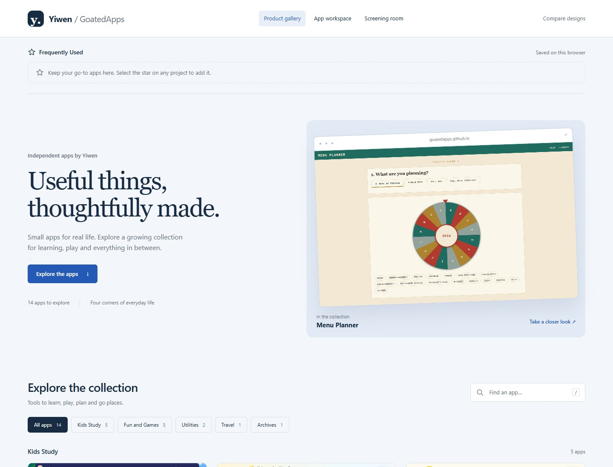
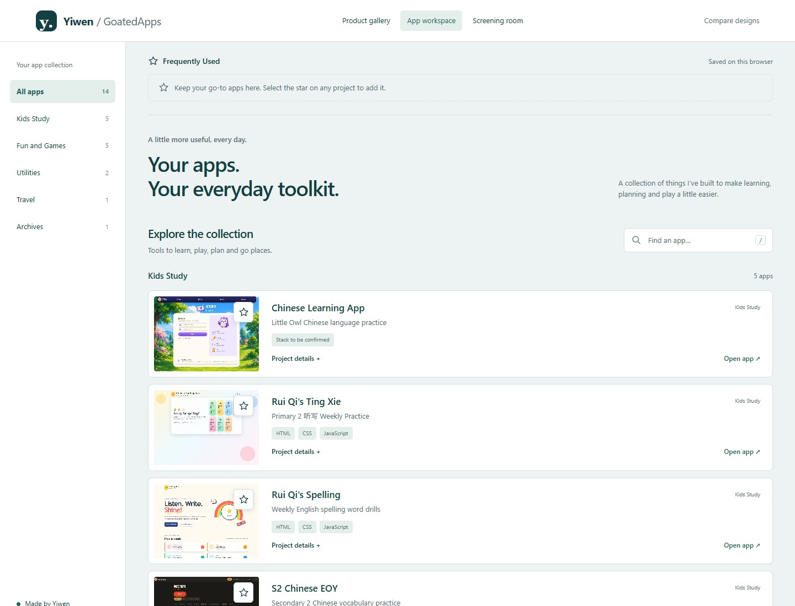
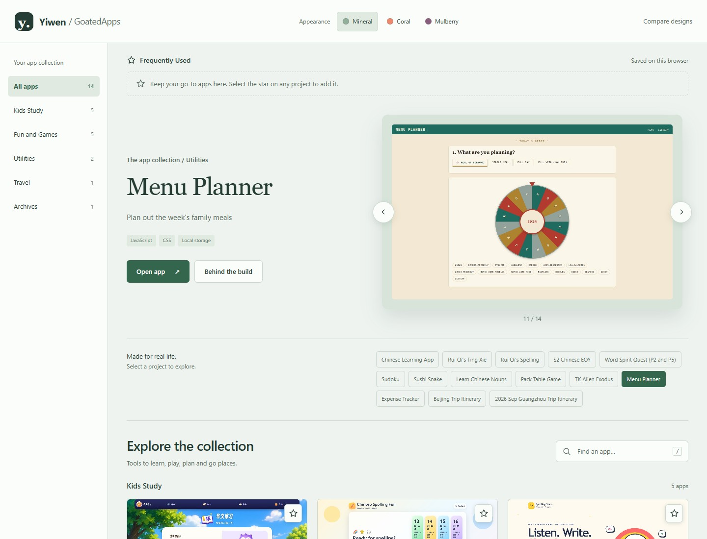

Open, considered, welcoming
Product gallery
A spacious visual catalogue with a featured app. The strongest balance between introducing your projects and using them.
Explore the gallery ↗A more professional home for your apps.
Explore three working concepts, each with real screenshots, project details and your own frequently used shortcuts.

A spacious visual catalogue with a featured app. The strongest balance between introducing your projects and using them.
Explore the gallery ↗
A quiet teal workspace with a category sidebar and compact app rows. Designed for people who return to use your tools.
Open the workspace ↗
A large app stage with a left category menu, previous and next controls, and three color schemes.
Enter the screening room ↗My recommendation: Product gallery. It gives the apps room to speak for themselves, while keeping navigation familiar. The workspace is the best fit if quick, repeated use matters most.
Star an app to place it in Frequently Used at the top. Search by name or technology, filter categories, and open Project details. Stars are saved on this browser; all three concepts use the same preference key.
All fourteen apps are included, with Guangzhou in Archives and Expense Tracker in Utilities. Edit apps-data.js to add apps, screenshots, technologies and learning notes. Learning notes are suggested drafts; the Chinese Learning app’s stack needs confirmation.
Design references: Awwwards interaction design, Self Aware (Site of the Day), and Linear’s calmer interface. Original concepts adapted to this app collection.